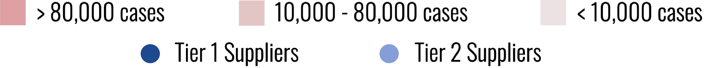
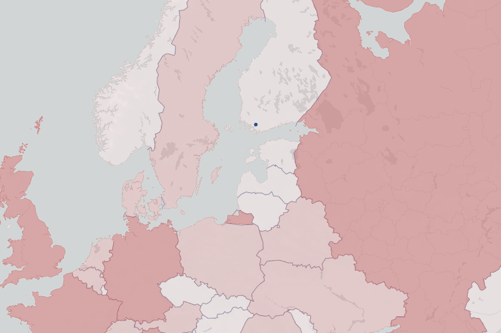

COVID-19's Disruption on Global Supply Chains
Erica Xin
The COVID-19 pandemic has caused major disruptions in the global supple chain, and companies that rely on international suppliers are much more affected than predicted due to the tiered system.
Taking Apple as an example, I analyzed the level of supply chain disruption by mapping out its top 200 suppliers around the world and looking at how severe the countries were affected by COVID-19. I categorized countries into three levels of severity according to the number of cases reported. As we can see from the map, 62 out of 200 suppliers, 31%, are located in the most affected countries, while 77 suppliers, roughly 40%, experience little to no impact.

At first glance, it may seem like only a small portion of Apple’s suppliers are affected by the pandemic. However, because supply chains are usually multi-layered, the actual impact can be much worse. In Apple’s case, the 200 listed suppliers are its direct Tier 1 suppliers. Each Tier 1 supplier also sources materials from its own suppliers, referred to as Tier 2 suppliers. Research shows that a typical global firm can have up to 10 tiers of suppliers for each product.
To illustrate, let's look at Salcomp Plc, a Tier 1 supplier for Apple. Although the company is located in Salo, Finland, one of the less affected regions, its suppliers come from all over the world, from Brazil to India to China, which have experienced a lot more disruption.

Adding Tier 2 suppliers to the map, we can see the distribution shift towards China, The high concentration of Chinese suppliers results in increased disruption in Apple’s supply chain. Compared to 31% in the first map, the number of suppliers in the most affected countries has risen to 418 out of 758, over 55%, after aggregating both tiers. Meanwhile, the percentage of unaffected suppliers has dropped to only 15%.
It is safe to assume that the deeper we go, the more supply chains will seem disrupted since most manufacturers are located in China.
Risk management implications suggest that this crisis can accelerate the trend of shifting supply chains from global to domestic scales and lead to de-globalization.